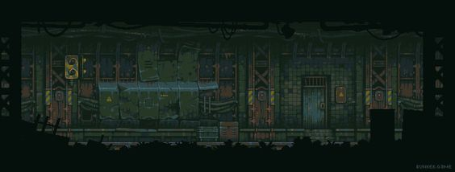

Mistérios da Mansão Esquecida

Ao resolver o quebra-cabeça de madeira com rapidez e habilidade, você ouve um clique suave e a estante de livros se move lentamente para o lado, revelando uma passagem secreta. Com cautela, você entra na passagem escura, guiado apenas pela luz fraca que emana de sua lanterna.